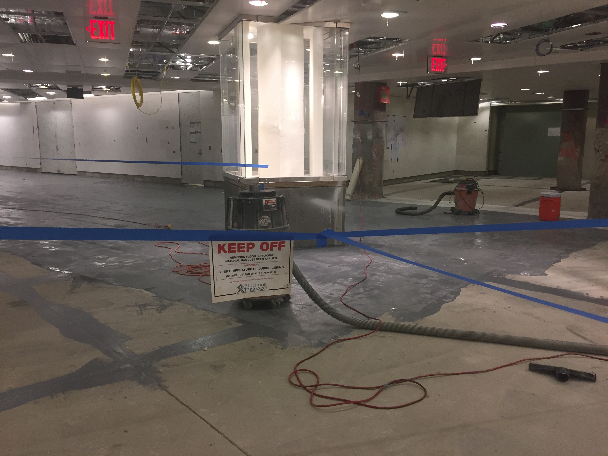

Rochester, WA Epoxy Specialists
Epoxy Flooring in Rochester, WA
Industrial-grade garage, shop, and commercial coatings engineered for Pacific Northwest moisture.
Get an Exact Quote for Your Concrete Floor
Whether you need durable garage flake epoxy, warehouse floor protection, or decorative metallic finishes, our local Rochester crew provides transparent estimates with zero pressure.
- Free Moisture Vapor Testing: Every slab evaluated for hydrostatic vapor emissions before primer application.
- Mechanical Diamond Grinding: CSP-2/CSP-3 concrete profiling with HEPA vacuums for lifelong adhesion.
- Commercial Polyaspartic: 100% UV-stable topcoats with rapid cure times and zero hot-tire pickup.
Prefer to speak with an estimator? Call (360) 284-1350.
Request a Free Quote
Fast pricing for Rochester & South Sound projects.
Transform Your Concrete Floors in Rochester, Washington
From residential two-car garages and rural hobby workshops to commercial warehouses and retail showrooms, Rochester Epoxy Flooring Pros provides seamless, ultra-durable concrete coating solutions built for South Sound conditions.
Rochester's Trusted Concrete Coating Specialists
Serving Rochester, Grand Mound, Centralia, Chehalis, Tenino and South Thurston County. Every project runs the same sequence: moisture vapor testing, mechanical diamond grinding to a CSP-2/CSP-3 profile, then a 100% solids epoxy base with a UV-stable polyaspartic topcoat — the specification that determines whether a floor lasts two decades or two winters.
About us
Services
Explore our specialized resinous floor and concrete preparation solutions in Rochester.
Garage Floor Epoxy
Durable multi-layer flake and solid epoxy systems designed to resist hot tires, salt, and vehicle fluids.
Garage Floor Epoxy in Rochester →Commercial Epoxy Coatings
Heavy-duty seamless resinous flooring for warehouses, retail spaces, agricultural facilities, and workshops.
Commercial Epoxy Coatings in Rochester →Metallic & Decorative Epoxy
Custom 3D marbleized metallic epoxy floors providing one-of-a-kind showroom aesthetics.
Metallic & Decorative Epoxy in Rochester →Concrete Surface Preparation
Precision planetary diamond grinding, shot blasting, and crack repair to guarantee lifelong adhesion.
Concrete Surface Preparation in Rochester →Durable, Moisture-Mitigating Epoxy Flooring in Rochester
Rochester sits within the Chehalis River drainage basin where high water tables, damp maritime winters, and glacial outwash gravels create persistent hydrostatic vapor pressure beneath concrete slabs. Unsealed garage floors, pole barns, and commercial shops along Highway 12 and Albany Street frequently suffer from dampness, efflorescence dusting, and winter spalling. Our industrial-strength epoxy and polyaspartic coating systems penetrate deeply into diamond-ground concrete pores, establishing an impenetrable moisture-vapor barrier that withstands heavy agricultural machinery, vehicle hot-tire pickup, and regional freeze-thaw cycles.
- Mechanical diamond grinding with HEPA dust containment for superior profile adhesion on Rochester outwash slabs.
- Vapor-barrier base coats engineered to block high Chehalis Basin hydrostatic moisture emissions.
- Rapid-cure polyaspartic topcoats providing 100% UV stability and zero hot-tire pickup.

Why Choose Rochester Epoxy Flooring Pros?
Local Moisture Mitigation
We test moisture vapor emission rates (MVER) and grind to CSP-3 standards before applying moisture-tolerant epoxy primers.
100% Solids Industrial Resins
Commercial-grade formulations that resist automotive fluids, battery acids, hydraulic oils, and fertilizer corrosion.
Slip-Resistant Texturing
Custom quartz and vinyl flake broadcasting designed specifically to prevent slips during rainy Western Washington winters.
Questions We Hear
Why do DIY epoxy kits peel and fail in Washington garages?
Store-bought DIY water-based kits only contain 30-40% solids and rely on acid etching rather than mechanical diamond grinding. Without proper concrete porosity and moisture vapor barriers, moisture vapor emissions push the thin film off the slab, causing hot-tire pickup within 12 to 18 months.
How long does a professional epoxy floor last?
A professionally ground and installed 100% solids epoxy and polyaspartic system typically lasts 15 to 25+ years in residential garages and commercial facilities with minimal routine maintenance.
Can epoxy be installed over cracked or pitted concrete?
Yes. Our surface preparation process includes routing out cracks and filling spalls with fast-setting polyurea repair menders that sand completely flush before primer application.
Talk with a local specialist
Speak with a flooring specialist today.
Free, no-obligation estimate.